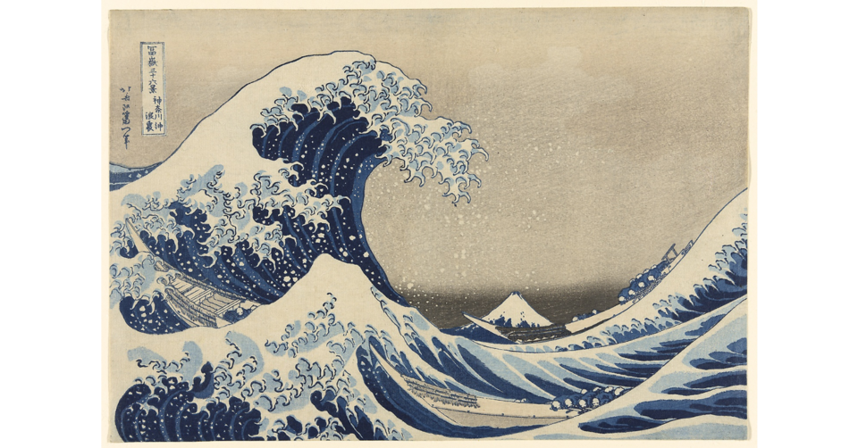

THE SMALL GALLERY

作品を準備しています…
作品を読み込めませんでした。
葛飾北斎
COLLECTION 01 / 30神奈川沖浪裏 1830〜1833年頃
A CLOSER LOOK AT ART
名画の、
その先。
近づいて、気づいて、好きになる。
絵の一部分から、作品を当てる。
答えの先には、画家の想いや
生まれた時代の物語が待っています。
5問の小さな美術館
4択クイズ · 時間制限なし
4択クイズ · 時間制限なし
作品名を知らなくても大丈夫。
少しずつ全体を見て、選んでみてください。
本物の絵と、確かな出典。
シカゴ美術館の公開作品 30点を収録
この名画、
わかりますか？
作品名を選んでください。
正解で pt
生まれた背景
もう一度、絵を見てみよう
解説：Art Institute of Chicago（CC BY 4.0）を日本語で要約・編集。鑑賞の問いかけは本アプリで追加。
THANK YOU FOR LOOKING CLOSER
今日は、どの絵が
心に残りましたか。
/ 5,000 pt
作品を押すと、絵と物語を見返せます。